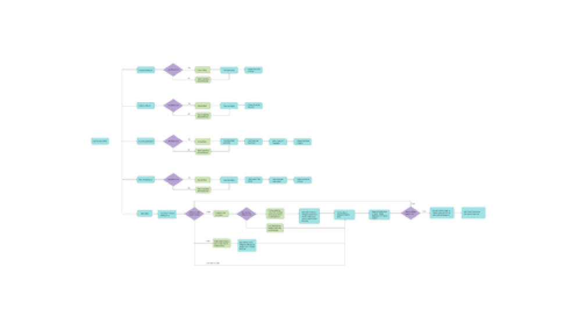
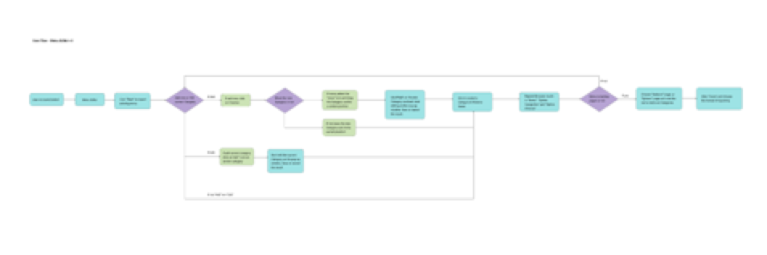
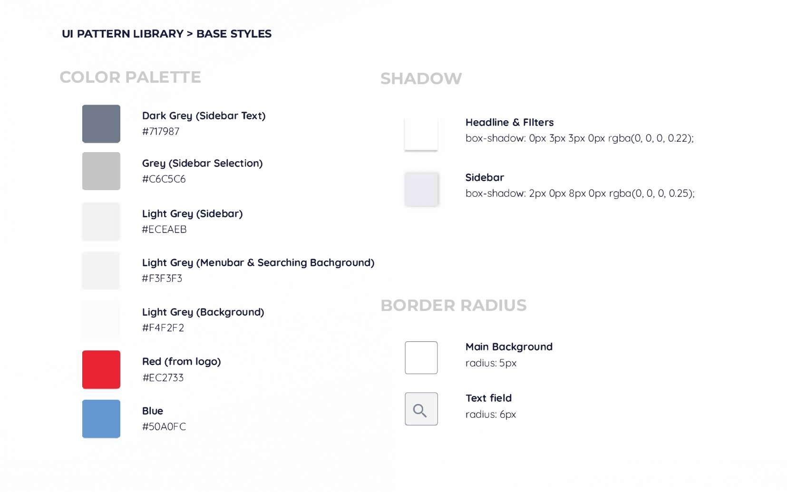
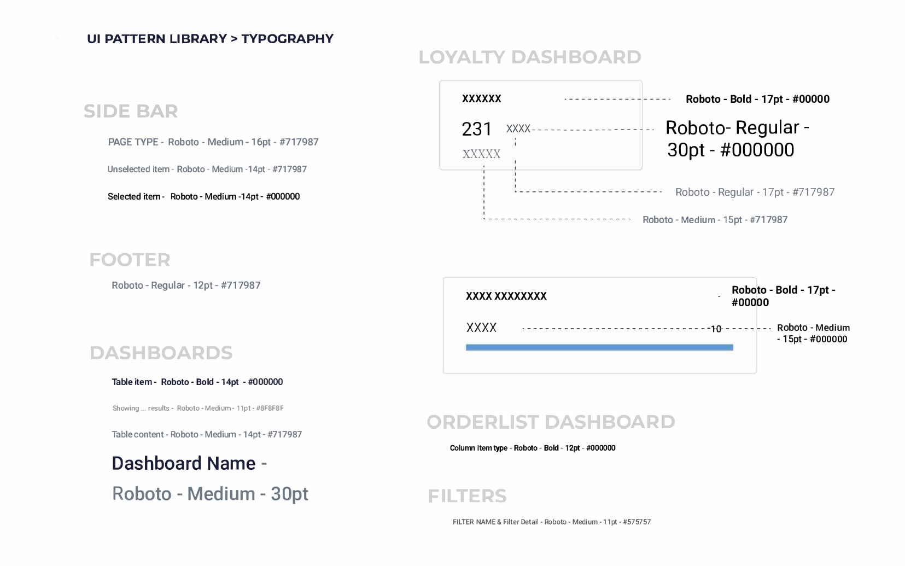
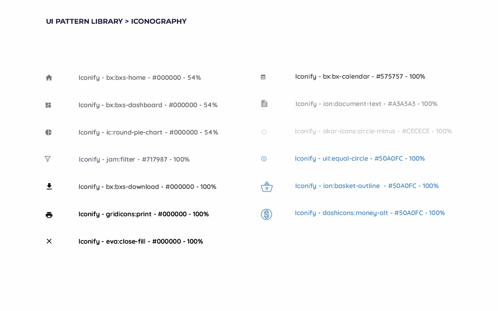

Working with an online ordering management solution startup, I provided validation research to redesign their portal dashboards and menu editor pages, and align new features and product design and development with customer needs and values.
Additional projects included design and implementation of learning and development programs, prototyping and design ideation on different devices, and market and customer insights and competitive reporting to the management team.
Environment & Audience ——Online Order Management Solution Product
In today's society, the traditional way of going to a restaurant to dine has become more like a social behavior, and the important task of filling your stomach has increasingly fallen on the way of online ordering.
During pandemic in 2020, millions of people in lockdown ordered food online for the first time. With changes in user behavior, many restaurants have begun to explore cooperation with online food ordering platforms, such as Ubereats, Doordash, Grubhub, etc. According to survey statistics, during the pandemic, US food delivery renvenu reached $26.5 billion, and the total number of users reached 111 million, and the growth rate was higher than in previous years.
(Full survey report and chart: Food Delivery App Revenue and Usage Statistics (2021) https://www.businessofapps.com/data/food-delivery-app-market/)
Since the US is the most well funded country and has the second largest Food Delivery App market in the world, there are many delivery apps on the market, and each restaurant often has more than one partner, sometimes even more than 5-6.
The client is an online third-party delivery management solution for restaurants, which helps restaurants manage orders on multiple platforms. This is the first time the company has redesigned the user-oriented Portal dashboards and menu management page after getting funded. I need to re-investigate the product features, modify the problems raised by users of the old version, and discuss the possibility of implementation with the development team.
The product is suitable for different devices. This time my design is mainly focused on the size of the web version, and future designs will continue to expand on the basis of my design.
I was the main UX/UI designer on the Portal project, working with another two designers in the team. I was a co-designer of the Menu management pages with a senior UX consultant. In addition, I worked closely with a dedicated product manager, the lead tech and a remote development team.
• COMMUNICATION: Write an iteration report to the management team every two weeks
• RESEARCH: Competitive research website to investigate competitors
• INTERACTION DESIGN: Created Users’ Journey Framework that maps out the users’ actions, expectations and potential routes to accomplish the delivery. Designed interactions and interface for Customer Service Side of the application.
• VISUAL DESIGN: Design high-fi wireframe, create UI component library
When communicating with lead tech and product manager at the beginning, I learned that the main challenges of this project are:
• With the increase of users, the data stored in the background is increasing rapidly. New design needs to add the Searching search engine function to the current portal dashboards.
• Users need to add new functions to export all the data in the dashboard in different formats
• The previous portal needs large-scale adjustments in appearance
After determining the direction of work, I began to confirm with the Productor manager about the scope of the priority design works and created Persona. During the design process, I always substitute the user's role to enhance empathy with the user's psychology.
Pizza restaurant owner Peter
Bio
Peter is the owner of a pizzeria with 15 branches in 3 states across the country.
Wants & Needs
• Manage orders received on the ordering platform in each branch
• Manage customer information
• View the order information and make data analysis for customers
• Freely develop online menu
Motivations
• More and more customers, more and more business
• Want to systematically manage data
• Use data analysis to optimize corporate structure and menus
Frustrations
• Unreliable system: The current system does not allow him to freely search for orders and customer information. Moreover, the visual design is rather messy, and the key colors of the blockbuster dazzled him.
• Short of time: Find the right management personnel
Mapping the common resourcing steps across all organisations and the resource managers themselves.
User flow chart （made blur to hide info according to NDA）
 Because of NDA, I can't put a specific prototyping drawing, but I will describe the next design steps.
Sketch& Visual design, build UI library
Based on the old version of the portal ad the newly created user flow flowchart, I drew the Sketch of each page.
While confirming Sketch with the company, I started Competitor search, explored Color Palette and Typography, and started to build a UI library for the development team.

The main two colors follow the color of the company logo to maintain brand consistency. In the research, I found that most Saas dashboards use several color combinations: monochrome white pages, 2or 3 color combinations.
Therefore, I drew some low-fi Wireframes in different colors and discussed them with another designer in the team, and showed them to the management team to find their favorite color combinations.
After discussion, it was decided to use a pure white background, and light gray to highlight the content in the table; the other two different warm and cold colors were dotted on the page to guide the user's priority level of functions on the page.
I decided to use Open-Source fonts for its availability and loading efficiency. When designing Saas dashboards, the first consideration was clear and correct fonts. Since the table in this project contains a lot of content, a font with a narrower font width would be a better choice.
At the beginning I chose Open Sans and Roboto. After testing in Wireframe, I finally chose Roboto, which carries more information.
Button color selection has also gone through several rounds of discussion. For example, some management team members like to highlight the background color in important buttons. Lead tech thought this is too dazzling. Finally, we decided to use the outer border color change method to highlight the key points.

I selected a set of Icon library, adjusted and selected the icon styles and colors on the page. Discuss with other designers and collect feedbacks extensively.
I created a prototype and was ready to test our solutions.
The prototype included new features such as Export button helps users export the content in dashboards in different formats, turned some tables into more visualized charts, etc.
Following brainstorming sessions with the other two designers, we have conducted multiple iterations. Then, we made a presentation with the management team and continued to iterate.
The Portal design wireframes and the overall product visual update manual UI Pattern Library. The Menu editor is still in the process of discussing UX.
• Experience in designing Saas tables
• Communication and collaboration with the team
• Systematically update the brand vision
• I want to continue to learn how to simplify the Saas form and make visual modifications according to customer needs.
The redesign of the portal and menu editor has had a positive impact on the user experience. Users use filters to search in different ways, which helps to verify the necessity of the filter list.
I will continue to help Menu management with similar steps in UX design and prototype production. Our design will continue to communicate with the management team and complete the update. It will be sent to customers and receive more feedbacks for further iteration.